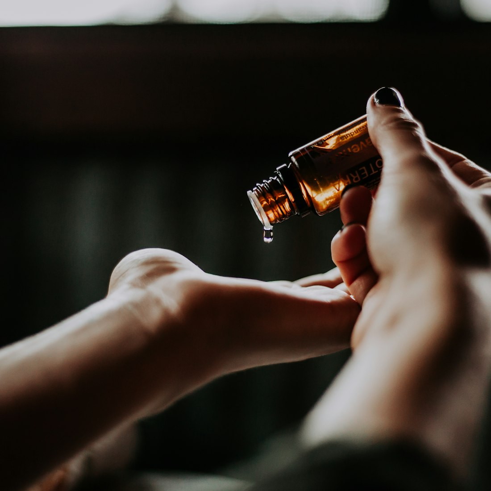

Physician-led protocols
Every plan begins with a consultation and pulse assessment by our Vaidya, then adjusts as your treatment progresses.
A physician-led Ayurvedic treatment centre rooted in Kerala's Panchakarma tradition. Every therapy is personalised after consultation with our Vaidya — to support your rest, relief and renewal.
Led by Dr. Anand Nampoothiri BAMS · Chief Physician (Vaidya)
Every therapy is guided by an experienced Vaidya.
Authentic Kerala-tradition purification therapies.
Classically prepared formulations from trusted sources.
Care shaped around your unique constitution.

For generations, the Ayurveda of Kerala has been kept alive not in textbooks alone, but in the hands of physicians who treat, observe and refine. Ojas Ayurveda was founded to carry that lineage forward — a centre where classical Panchakarma is practised with fidelity to the texts, and delivered with the calm of a modern retreat.
We believe care is personal. In Ayurveda no two people are alike, and no two treatment plans should be either. We consider your individual constitution — your Prakriti — alongside the imbalances of the present moment, then shape a course of authentic therapies around them. The aim is not a quick fix, but a steady return to balance.
In Ayurveda, the person is treated — not the disease alone.
Every plan begins with a physician reading your constitution and current dosha balance.
Panchakarma, Abhyanga, Shirodhara and more, in the traditional method under physician guidance.
Medicated oils and formulations prepared and sourced with care for your prescribed course.
Dr. Anand Nampoothiri BAMS · Chief Physician (Vaidya)
Every treatment is chosen for you after consultation with our physician, and personalised to your constitution and current needs. Tap a therapy to read more.
A full-body massage using warm, medicated herbal oils, applied with rhythmic strokes that follow the body's channels and marma (vital) points. The oil is selected to suit your constitution and worked into the skin to nourish the tissues and settle the nervous system.
Best for: Anyone new to Ayurveda seeking deep relaxation and grounding.
A continuous, gentle stream of warm medicated oil is poured over the forehead for a sustained period, moving slowly across the brow. The steady rhythm and warmth quieten mental activity and guide the body into deep rest.
Best for: Those dealing with stress, restlessness or disturbed sleep.
Our signature multi-day programme: a structured course of preparation, cleansing and rejuvenation. The body is first prepared with oleation (snehana) and herbal steam (swedana), then guided through the classical procedures, and finally supported through a rebuilding phase with diet, herbs and rest — each day designed by the physician.
Best for: Guests seeking a genuine, physician-led cleansing and rejuvenation journey.
Medicated herbal oils are administered through the nostrils, usually after a gentle massage of the face, neck and shoulders with warm steam. In Ayurveda the nose is considered the gateway to the head, so this therapy works on the region above the collarbone.
Best for: Those with sinus discomfort, tension headaches or neck-and-shoulder tightness.
An invigorating massage using herbal powders, worked over the body with firm, upward strokes. The technique is stimulating rather than soothing and is traditionally chosen as part of a Kapha-balancing routine.
Best for: Guests wanting an energising treatment, often as part of a Kapha-balancing plan.
Warm medicated oil is continuously squeezed over the whole body from cloth pads while therapists massage in coordination. Often described as a "royal" treatment, it combines the warmth of an oil bath with the touch of massage.
Best for: Those with joint or muscular stiffness, or seeking profound rejuvenation.
A small reservoir built from herbal dough is placed around the eyes and filled with warm medicated ghee, bathing the eyes while you rest them — a gentle, cooling treatment for eyes tired by strain.
Best for: Anyone with screen fatigue, dry eyes or eye strain.
A dough ring is placed on the lower back and filled with warm medicated oil, held in place so the oil bathes the area for a sustained period. The localised warmth and oil work directly on the lower back and surrounding muscles.
Best for: Those with lower-back stiffness, tension or long hours of sitting.
All therapies are personalised after consultation with our physician. Ayurvedic treatments support wellbeing and are not a substitute for medical care. If you have a medical condition, are pregnant, or take medication, please tell us during your consultation.
A warm, unbroken thread of medicated oil flows across the brow, minute after minute, until the restless mind grows quiet. It is the treatment our guests remember most — unhurried, deeply calming, and a fitting introduction to the Ayurvedic way of rest.
In Ayurveda, three vital energies — the tridosha of Vata, Pitta and Kapha — shape every body and mind in a unique proportion. Understanding your dominant dosha is a helpful starting point; your true constitution is confirmed in consultation with our physician.
Quick, creative and ever in motion — Vata governs breath, circulation and the nervous system.
Lifestyle: Favour warm, cooked, well-spiced meals at regular times; keep a steady daily routine with early, unhurried rest.
Sharp, focused and driven — Pitta governs digestion, metabolism and the intellect.
Lifestyle: Favour cooling, fresh foods and reduce spicy, sour and fried dishes; avoid the midday sun and make time to cool the mind.
Steady, calm and enduring — Kapha governs stability, strength and immunity.
These qualities offer a gentle guide, not a diagnosis. A personalised assessment with our physician determines the therapies best suited to you, and Ayurvedic care is intended to complement, not replace, the advice of your doctor.
A guided path from first consultation toward lasting balance. Every stage is personalised — because authentic Panchakarma is shaped to your body, not fitted to a fixed package.
Your journey begins with an unhurried consultation. The physician assesses your pulse, constitution and current state to understand your nature (Prakriti) and any imbalances (Vikriti), then designs a plan suited to you.
The body is gently prepared through Snehana (oleation with medicated oils and ghee) and Swedana (herbal steam). Together these soften the tissues and help mobilise accumulated toxins (ama) toward release.
The heart of Panchakarma: the classical cleansing procedures drawn from Vamana, Virechana, Basti, Nasya and Raktamokshana. Only the therapies suited to your constitution are performed, under close physician supervision.
As therapy concludes, the body is gently restored. A graduated return to normal diet (Samsarjana Krama) rekindles digestion, while Rasayana measures to support strength and vitality are introduced where appropriate.
You leave with tailored guidance on suitable diet (Pathya), daily routine (Dinacharya) and lifestyle, so the benefits of your treatment continue well beyond your stay with us.
Every plan begins with a consultation and pulse assessment by our Vaidya, then adjusts as your treatment progresses.
Authentic therapies in the living Kerala tradition, carried out by trained therapists under physician guidance.
Medicated oils and preparations made from classical formulations, so quality and provenance stay in our hands.
Serene single-guest therapy rooms held to careful hygiene standards, giving you space to rest and slow down.
“I came in exhausted and sleeping badly. Over three weeks, a course of Shirodhara and a personalised daily routine helped me unwind in a way I hadn't in years. I feel steadier and more rested.”
“Years at a desk had left my lower back constantly stiff. The Kati Basti and Abhyanga sessions, with diet guidance from the Vaidya, eased the tension gradually. Everyday movement feels far more comfortable now.”
“After a long illness I felt weak and depleted. Following a consultation, the physician planned a gentle Rasayana rejuvenation programme, and over the weeks my strength and appetite slowly returned. I felt genuinely cared for.”
“I chose the Panchakarma programme mainly to reset after a stressful year. The therapies were unhurried and the team explained each step. I left feeling lighter and more clear-headed.”
“My tension headaches used to build up through the week. The Nasya and Shiro Abhyanga sessions, with some lifestyle guidance, have helped ease how often they come on. It has made a real difference to my routine.”
A little about your first visit and how we work. Still unsure? Message us on WhatsApp — we're happy to help.
Ask us anythingYour first visit begins with an unhurried consultation with our Vaidya, who assesses your constitution through Nadi Pariksha (pulse reading), observation and a conversation about your health, sleep, digestion and lifestyle. From this we design a treatment plan suited to you — nothing is standardised, and no therapy begins before this assessment.
Each person carries a unique balance of Vata, Pitta and Kapha, and imbalance can show up differently in each of us. After assessing your Prakriti (natural constitution) and your current state (Vikriti), the Vaidya selects the therapies, herbal oils and dietary guidance best matched to your needs — so two guests rarely follow the same programme.
Classical Panchakarma unfolds in stages — preparation (Purvakarma), the main therapies (Pradhanakarma) and a period of rebuilding (Paschatkarma) — so it is best experienced over a course of days rather than a single session. Programmes are commonly structured across 7, 14 or 21 days, and the Vaidya recommends a suitable length after consultation.
Most therapies are deeply relaxing — warm herbal oils, rhythmic massage and gentle heat that ease the body and calm the mind. A few cleansing procedures can feel unfamiliar at first, and our therapists guide you through each step with care so you remain comfortable throughout.
Yes. We use classical formulations prepared in the Kerala tradition, with many of our medicated oils and herbal preparations made in-house from quality-sourced herbs. Each is chosen by the Vaidya to match your treatment plan.
No. Our therapies are complementary and best experienced alongside, not in place of, your regular medical care. Please continue any prescribed treatment and consult your doctor for medical conditions. If you take medication or have a health concern, share it with our Vaidya so your plan can be made safe and appropriate for you.
Wear loose, comfortable clothing, and bring any relevant medical records or a list of current medications to your consultation. Treatments involve warm herbal oils, so we provide the necessary garments and linens — simply come relaxed and ready to unwind.
The easiest way to book is by WhatsApp — tap any booking button and a pre-filled message will open, ready for you to send. We'll confirm your appointment and answer any questions before your visit.
The easiest way to book is on WhatsApp. Tap the button and a message is ready to send — we'll confirm your appointment and answer any questions before your visit.
Message us on WhatsAppOpens a chat: “Hey I need an appointment”